Events · Porchfest
Middlebrook Porchfest
Grab a lawn chair and wander porch to porch through Great Western Crossing, with live music at every stop and a closing show on the Farmhouse porch.
- One fall Sunday
- 6 porches
- 6 bands
Fall 2027 Thanks for a great first Porchfest.
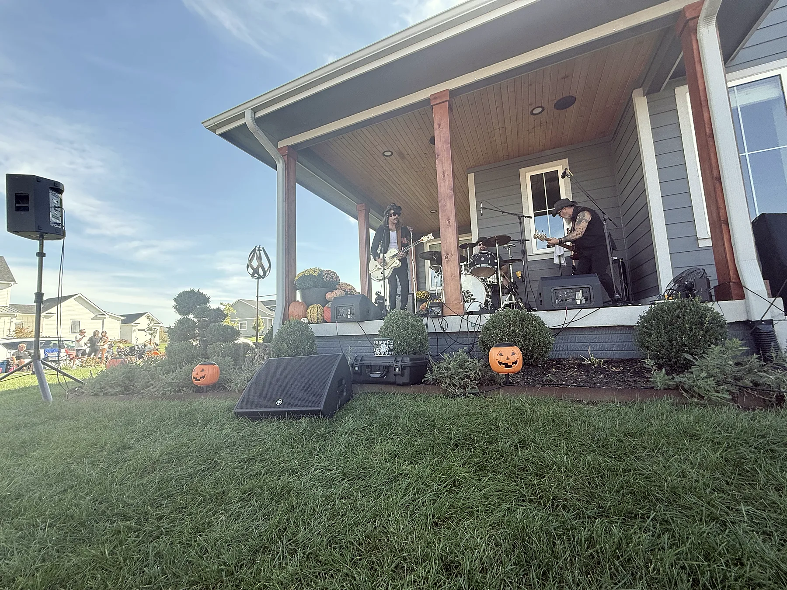
Music from the front porch
In true Porchfest fashion, neighbors in Great Western Crossing open up their porches to local musicians for one Sunday afternoon. You walk from house to house, set up your chair on the lawn, and catch a set at every stop.
When the neighborhood sets wrap up, everyone heads to the Farmhouse for a longer closing show, with food trucks, wine and beer, and all the good vibes. The first Porchfest was October 11, 2026, and it is coming back in fall 2027.
- 6
- porch stops
- 7
- hours of music
- 2026
- first annual Porchfest
Musician tips encouraged.
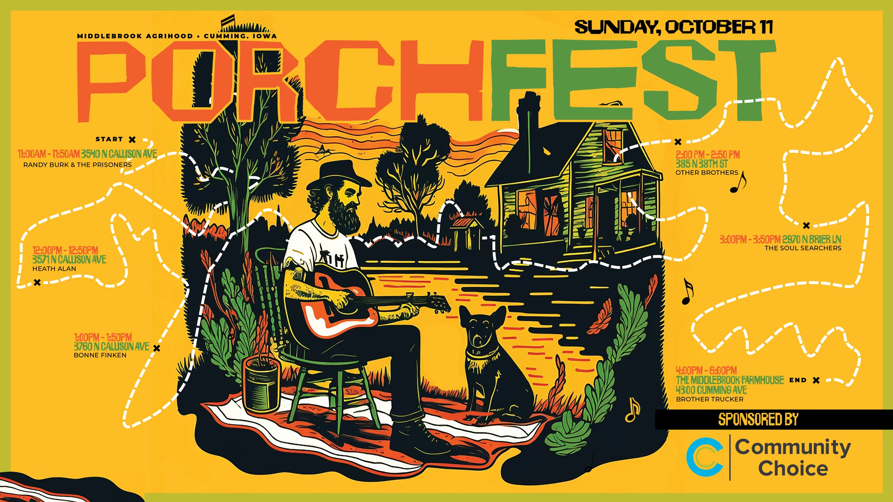
The 2026 route and performers
Six sets ran one after another, so everyone could catch every band. The day started on Callison Avenue and finished on the Farmhouse porch.
2026 map and guidelines (PDF) (opens in a new tab)-
11:00 to 11:50 AM
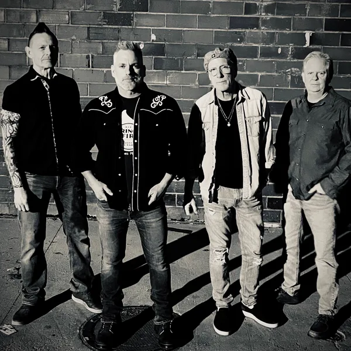
Randy Burke & the Prisoners
N Callison Avenue · Back porch
-
Noon to 12:50 PM
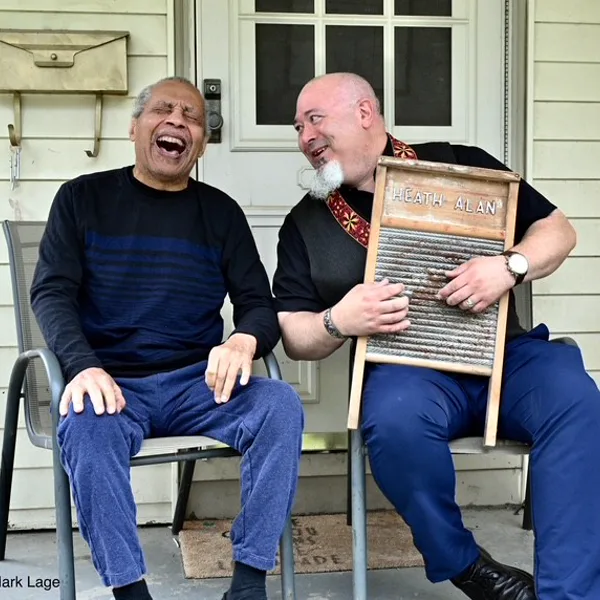
Heath Alan
N Callison Avenue · Front porch
-
1:00 to 1:50 PM
Bonne Finken
N Callison Avenue · Back porch
-
2:00 to 2:50 PM
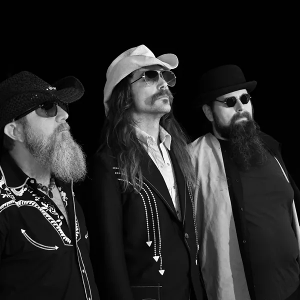
Other Brothers
N 38th Street · Front porch
-
3:00 to 3:50 PM
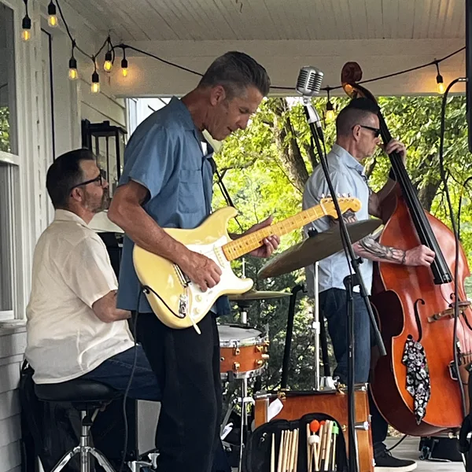
The Soul Searchers
N Brier Lane · Back porch
-
4:00 to 6:00 PM · Closing show
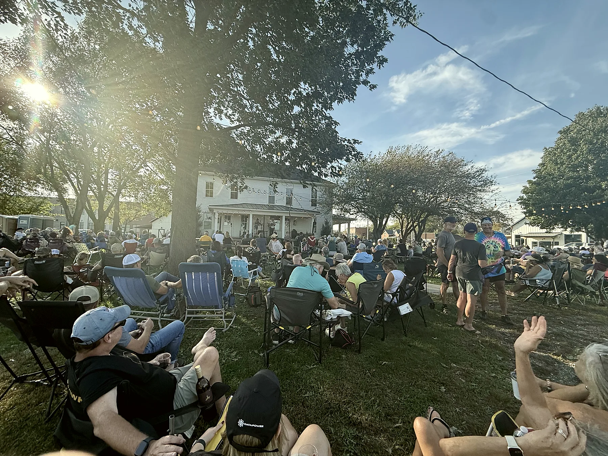
Weary Ramblers
The Middlebrook Farmhouse, 4300 Cumming Avenue · Front porch
Porchfest 2026
Lawn chairs, bikes, and a crowd at every porch. Select any photo to see it larger.
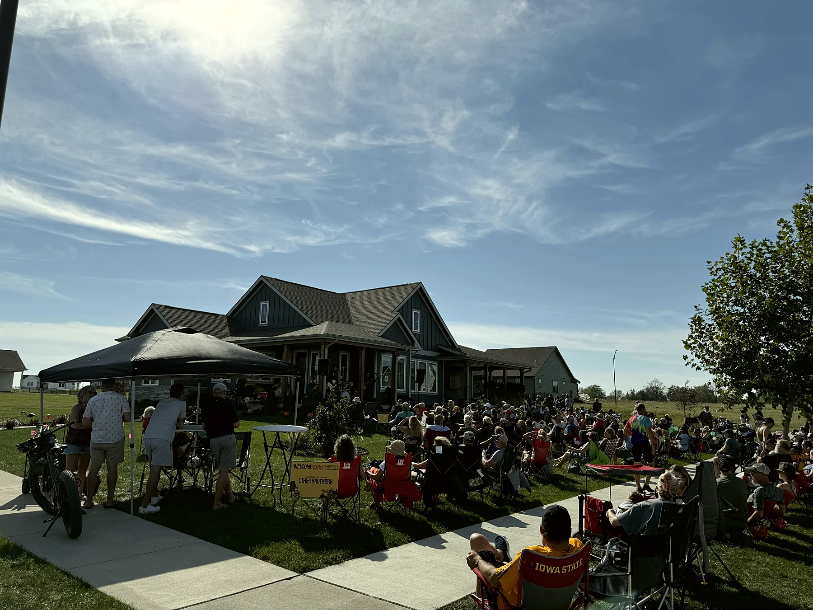
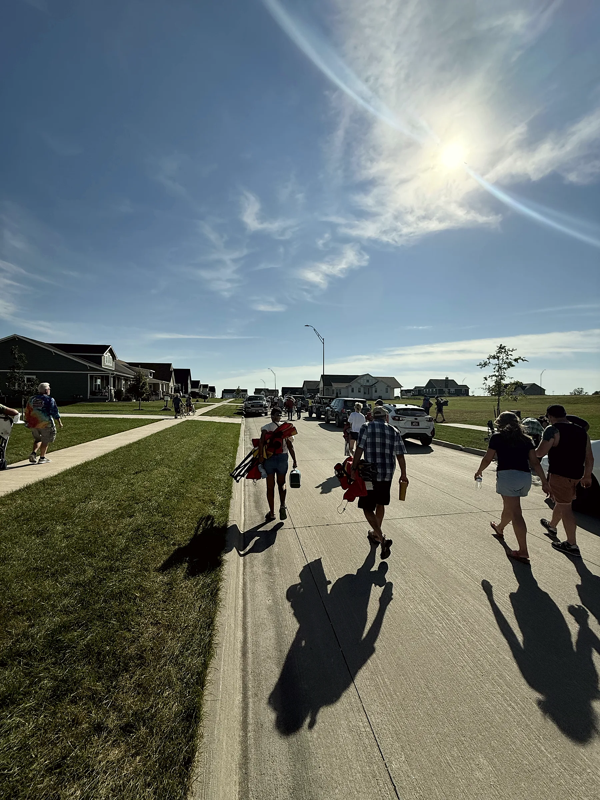
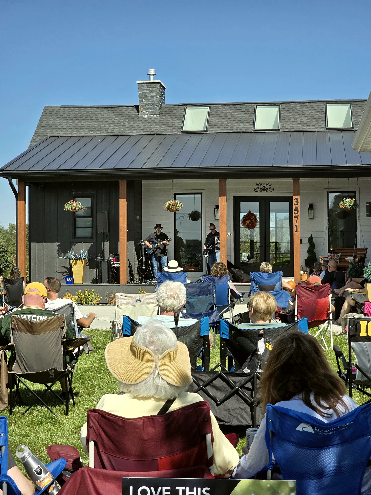
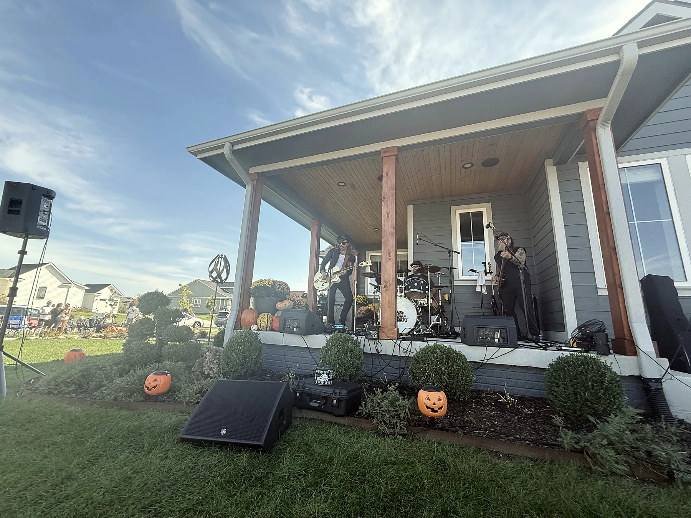
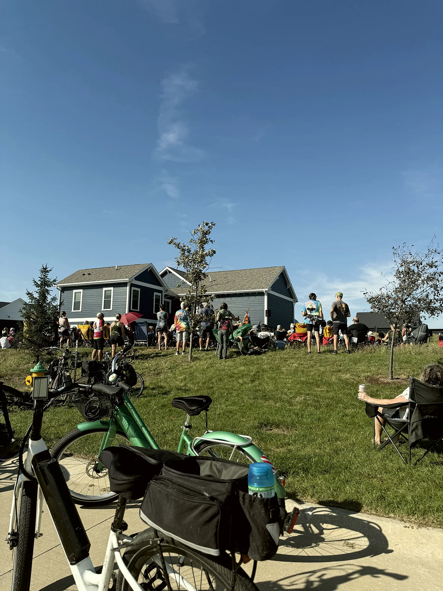
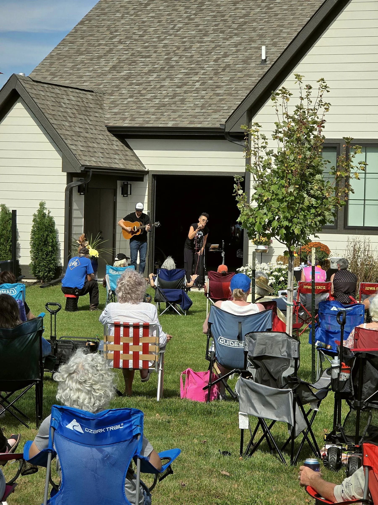
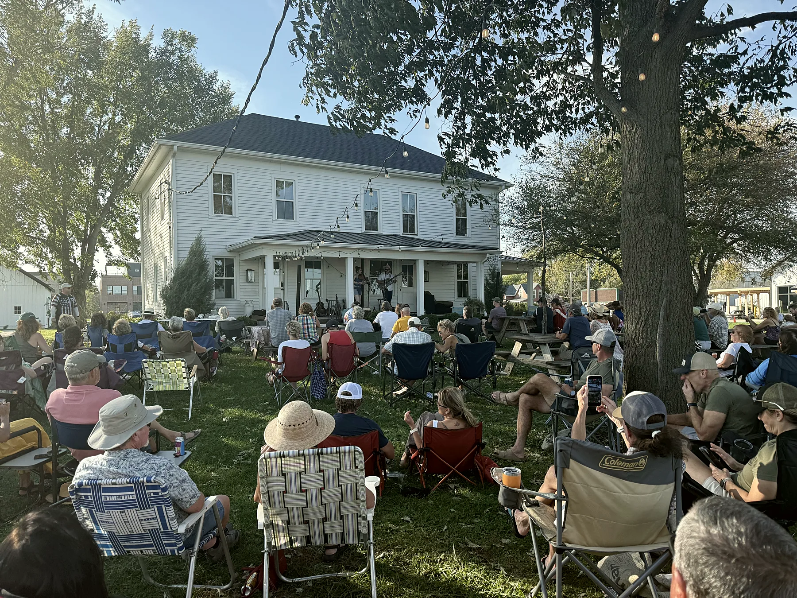
Plan your Sunday
Good to know
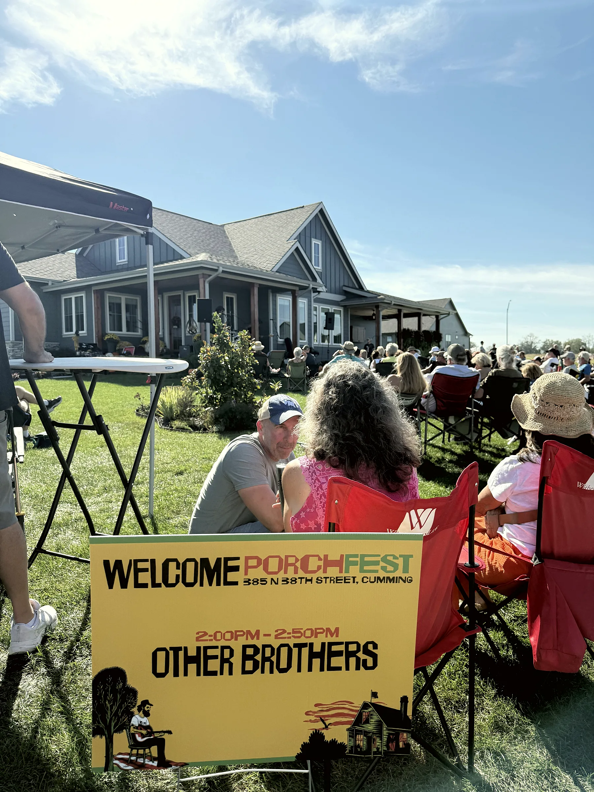
Food and drink
Food trucks park at Mayor Tom Becker Park, in the middle of the route, during the day, and at the Farmhouse for the closing show. The Wine Wagen sells beer, seltzers, and wine by the bottle or glass from 4:00 to 6:00 PM.
No outside alcoholic drinks or coolers are permitted at Middlebrook Farm.
Parking
Park in Middlebrook Farm’s field parking: turn south onto S 44th Street and follow the signs. Street parking in Great Western Crossing is limited.
It is about a one-mile walk from parking to the first porch, and the closing show is near the parking area, so you will make your way back as the day goes on.
Weather and accessibility
We will do our best to hold Porchfest safely and will share any changes to the schedule or route on social media. Porchfest is outdoors on natural terrain, including grass, mulch, and gravel, with some uneven areas.
Questions or need accommodations? Reach out to Events@MiddlebrookFarm.com.
Be a good guest
Porchfest happens on private property. Please respect our generous homeowners and leave no trace. Trash cans are at every porch and at Mayor Tom Becker Park.
Seating
Bring your own lawn chairs or blankets. There are a limited number of picnic tables at the Farm.
Restrooms
At Mayor Tom Becker Park and on the Middlebrook Farm Grounds.
See you on the porch
Porchfest returns fall 2027
Sponsor PorchfestThank you to our 2026 sponsor
Sign up below to hear the 2027 date first. For sponsorships, email Events@MiddlebrookFarm.com.